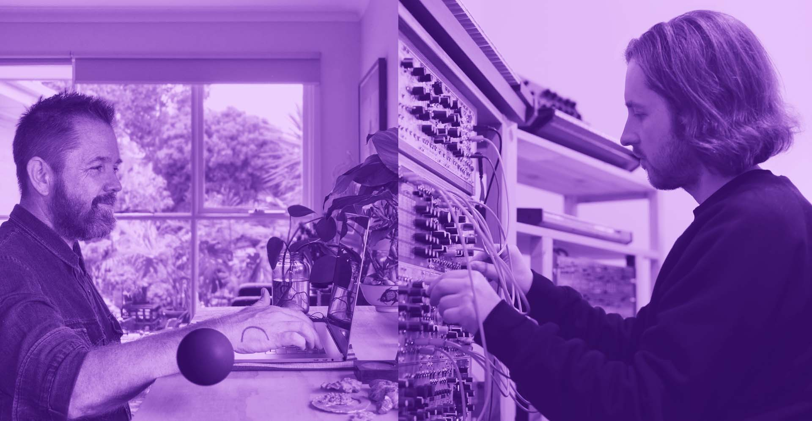

Archive / Project
μMuography — Muon Sound Lab
- When
- 18—19 August 2023
- Location
- Science Gallery Melbourne
- Programme
- Dark Matter / National Science Week
- Artists
- Jon Butt + Lewis Gittus
Project overview
μMuography: Muon Sound Lab brought cosmic-particle detection into a public two-day live sound laboratory and a subsequent live concert performance.

Part 1
Muon Sound Lab
The μMuography device was a DIY particle detector built by Dark Matter participating artist Jon Butt. Engineered using open-source plans and hand-built instruments and circuitry, the device detected cosmic particles (muons) as they rained down to Earth. Particle detection data was translated into artworks that explored deep time, the supermassive universe, the weirdness and wonder of material realities, and the hidden energies beneath the surface of the everyday.
For National Science Week, Jon invited collaborator Lewis Gittus to develop a two-day live sound lab within the installation at Science Gallery. Connecting sensors, microphones and analogue synthesisers to the μMuography device, the duo created a new sound score using muon detections made onsite, allowing interstellar particles to form musical passages.
The Muon Sound Lab created an open studio at the intersection of scientific experimentation and creative studio practice. Visitors could watch the live creation of the work, talk with the artists and engage in conversations around the sometimes opposing forces of scientific research and poetic intuition as ways of comprehending the mysterious and incomprehensible.
The resulting sound work was pressed into a vinyl record as a residue of the experiments. The record offered a nostalgic reference to the Voyager spacecraft’s Golden Record and its attempt to document a broad spectrum of scientific and cultural knowledge in a minimal physical form for communication with non-human intelligences.
Part 2
Live Sound Performance
The second part of the project brought the material created during the Muon Sound Lab into a live performance at Science Gallery.
Jon and Lewis invited Kaylie Melville and Zela Papageorgiou from Speak Percussion to perform alongside the vinyl record and live particle detections from the μMuography device.
The smaller detector and a turntable were installed together, with Kaylie and Zela performing a live score in response to both the vinyl—as a “non-human” material performer—and muon particles detected in real time as interstellar performers.
Presented in a concert setting, the work created a spatial soundscape contemplating deep time, vast spaces, molecular realities and the mysterious hidden forces that surround our everyday experience.